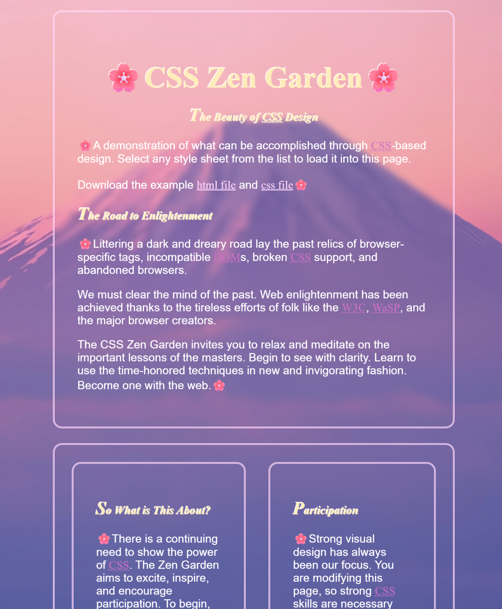

CHALLENGES CONQUERED
- The Problem: I was confused by the selectors that included “child” in them, I couldn’t
grasp the concept of it.
- The Solution: After using w3schools, I was able to understand that “child” meant that a
tag would be inside another tag; the parent being the outside one and the child being the inside one.
- The Problem: I added a picture in my background but I didn’t know how to size it
properly, it was bugged and moved strangely when I resized the window.
- The Solution: I asked my teacher on how to properly size it and it finally worked how I
wanted it to.
- The Problem: I couldn’t get my boxes to align using CSS flex or grid
- The Solution: I completed challenges such as Grid attack and flexbox froggy that
improved my understanding of flex and grid and ultimately helped me fix my problem of misaligned boxes.
- The Problem: I didn’t know many of the selectors that we were required to use.
- The Solution: After using w3schools again, I was able to learn the uses of the
different selectors and implement them into my website..

TECHNOLOGY STACK
- Languages: CSS
- Tools: VS Code for developmetn, Github for version control
- Deployment: Netlify
CONCEPTS LEARNED
- CSS Selectors We learned how to use various types of selectors to grab different tags
and style them.
HABITS OF MIND
- Investigation: I wanted to add a blur texture to some of my boxes but I didn’t know how
to do it. I investigated online to learn more about how to do it in CSS and implemented it to my
website.
- Communication: I asked people how they used different tags for different parts of their
website and I used many different peoples as inspiration.